Illustration 1: Body Array Coil - Shock Sensor Placement

| NOTE: | The actual location of the shock sensor on the coil may vary slightly from that shown in the following illustrations. Use best judgment and follow Guidelines for Placement when placing the sensor. |
Place the sensor where indicated in the illustration below for the following coils:
1.5T Prima 9000 8-Channel Body Array Coil
1.5T Signa HD 8-Channel Body Array Coil
1.5T 12-Channel Body Array Coil
1.5T Signa Horizon Pelvic Phased Array Coil
1.5T Torso Pelvis Array Coil
1.5T CV/i Peripheral Vascular Coil
USAI 1.5T Flow 7000 Phased Array Peripheral Vascular Coil
Illustration 1: Body Array Coil - Shock Sensor Placement
Place the sensor where indicated in the illustration below for the following coils:
1.5T Breast Coil (Flat or Curved Base)
1.5T HD Vibrant Bilateral Breast Array Coil
3.0T HD Breast Array Coil (Flat or Curved Base)
Illustration 2: Bilateral Breast Array Coil - Shock Sensor Placement
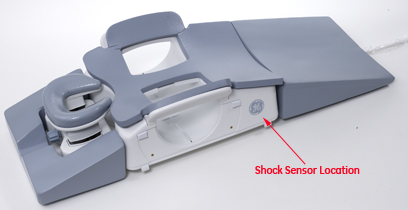
Place the sensor where indicated in the illustration below for the following coils:
MRID 1.5T Open Breast Coil
1.5T HD 4-Channel Breast Array Coil
Illustration 3: Open Breast Coil - Shock Sensor Placement

Place the sensor where indicated in the illustration below for the 3.0T Sentinelle Vanguard Tabletop Coil:
Illustration 4: 3.0T Sentinelle Vanguard Tabletop Coil - Shock Sensor Placement
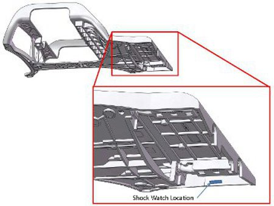
Place the sensor where indicated in the illustration below for the following coils:
1.5T 8-Channel Cardiac Array Coil
1.5T Signa HD Cardiac Coil
Illustration 5: Cardiac Coil - Shock Sensor Placement

Place the sensor where indicated in the illustration below for the following coils:
1.5T 32-Channel Cardiac Array Coil
3.0T 32-Channel Cardiac Array Coil
Illustration 6: Cardiac Array Coil - Shock Sensor Placement

Place the sensor where indicated in the illustration below for the 3.0T Cardiac Coil:
Illustration 7: 3.0T Cardiac Coil - Shock Sensor Placement

Place the sensor where indicated in the illustration below for the following coils:
1.5T High Resolution Wrist Coil
1.5T HD 8-Channel Wrist Array Coil (Curved or Flat Base)
1.5T HD 4-Channel Wrist Array Coil
3.0T 8-Channel Wrist Coil (Curved or Flat Base)
Illustration 8: Wrist Coil - Shock Sensor Placement

Place the sensor where indicated in the illustration below for the following coils:
1.5T HD Lower Leg Coil
1.5T HD 16-Channel Lower Leg Array Coil
Illustration 9: Lower Leg Coil - Shock Sensor Placement
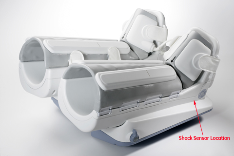
Place the sensor where indicated in the illustration below for the following coils:
1.5T Knee Phased Array Coil
1.5T HD Knee Array Coil (Flat or Curved Base)
3.0T HD T/R Knee Array Coil (Flat or Curved Base)
Illustration 10: Knee Array Coil - Shock Sensor Placement

Place the sensor where indicated in the illustration below for the following coils:
MedAdv 1.5T Extremity Coil
1.5T T/R PA Knee/Foot Coil
1.5T HD T/R Quadrature Extremity Coil (Flat or Curved Base)
GE 3.0T Signa Quad Extremity Coil
3.0T Signa EXCITE Quad Extremity Coil
3.0T T/R Quad Extremity Coil (Flat or Curved Base)
Illustration 11: Quad Extremity Coil - Shock Sensor Placement
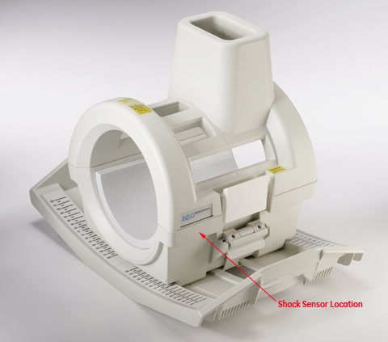
Place the sensor where indicated in the illustration below for the following coils:
1.5T HD 8-Channel Foot/Ankle Coil
3.0T 8-Channel Foot/Ankle Coil
Illustration 12: Foot/Ankle Coil - Shock Sensor Placement

Place the sensor where indicated in the illustration below for the following coils:
1.5T 8-Channel High Resolution Brain Array Coil
1.5T Quad Head Coil (Classic)
3.0T Head Coil
3.0T 8-Channel High Resolution Brain Array Coil
Illustration 13: Brain Array Coil - Shock Sensor Placement
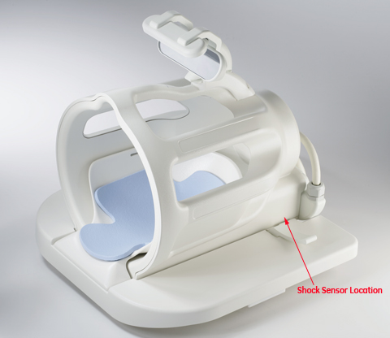
Place the sensor where indicated in the illustration below for the following coils:
1.5T HNS Coil/ Head Neck Posterior Unit
1.5T HNS Coil/ Neck Chest Unit
1.5T HNS Coil/ TL Unit
3.0T HNS Coil/ Head Neck Unit
3.0T HNS/ Neck Chest Coil
3.0T HNS Coil/ TL Unit
3.0T HNS Array Coil
Illustration 14: HNS Coil - Shock Sensor Placement

Place the sensor where indicated in the illustration below for the following coils:
1.5T Quad NV Coil
MRID 1.5T Phased Array NV Coil
MRID 1.5T Open NV Coil
1.5T Quad NV Array Coil
GE 1.5T 8-Channel NV Array
1.5T HD NV Array
1.5T HD 8-Channel NV Array
3.0T 4-Channel NV
3.0T HD NV Array
Illustration 15: NV Array Coil - Shock Sensor Placement
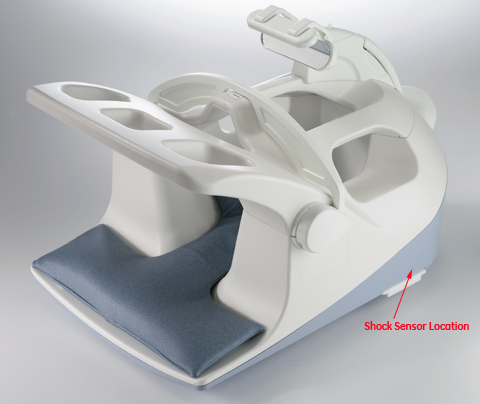
Place the sensor where indicated in the illustration below for the following coils:
1.5T Quad T/L Spine Coil
1.5T Quad Cervical Spine Coil
1.5T CTL Phased Array Coil
USAI 1.5/1.0T CTL Phased Array Coil
1.5T 8-Channel CTL Spine Coil
1.5T Signa HD 8-Channel CTL
3.0T 4-Channel CTL Array
3.0T Phased Array CTL
3.0T HD 8-Channel CTL
Illustration 16: CTL Coil - Shock Sensor Placement
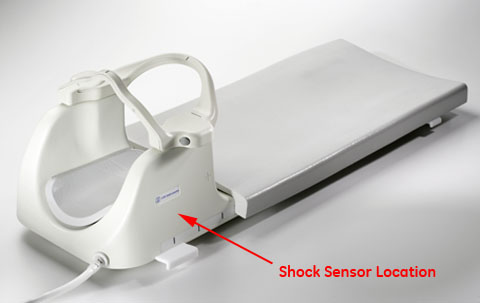
Place the sensor where indicated in the illustration below for the following coils:
1.5T Shoulder Coil
MRID 1.5T Phased Array Shoulder Coil
1.5T Mark 9000 Phased Array Shoulder Coil
1.5T Phased Array Shoulder Coil
1.5T Phased Array Shoulder Coil
1.5T HD 8-Channel Shoulder Coil
1.5T 3-Channel Shoulder Array
3.0T HD Shoulder Array
3.0T Signa HDx Shoulder Coil
3.0T HD 8-Channel Shoulder Coil
Illustration 17: Shoulder Coil - Shock Sensor Placement
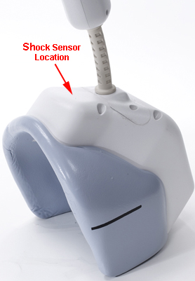
Place the sensor where indicated in the illustration below for the following coils:
3.0T Excite 8-Channel Torso Array Coil
3.0T HD 8-Channel Torso Coil
Illustration 18: Torso Coil - Shock Sensor Placement
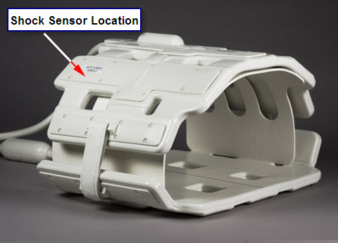
Place the sensor where indicated in the illustration below for the 3.0T 32-Channel Torso Array Coil:
Illustration 19: Torso Array Coil - Shock Sensor Placement

Place the sensor where indicated in the illustration below for the following coils:
1.5T GE Signa Infinity Split Head Coil
1.5T TR Split Top Head Coil
3.0T GE Signa Infinity Split Head Coil
3.0T Split Head Coil
Illustration 20: Split Head Coil - Shock Sensor Placement
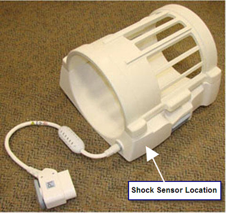
Place the sensor where indicated in the illustration below for the 1.5T and 3.0T PV Coil:
Illustration 21: 1.5T and 3.0T PV Coil - Shock Sensor Placement
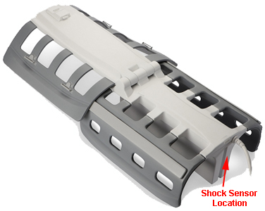
Place the sensor where indicated in the illustration below for the 1.5T and 3.0T HNU Anterior Coil:
Illustration 22: 1.5T and 3.0T HNU Anterior - Shock Sensor Placement
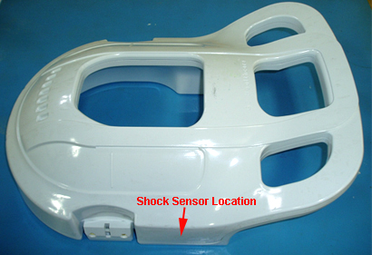
Place the sensor where indicated in the illustration below for the 1.5T and 3.0T HNU Posterior Coil:
Illustration 23: 1.5T and 3.0T HNU Posterior - Shock Sensor Placement
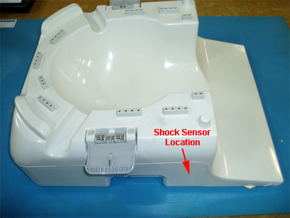
Place the sensor where indicated in the illustration below for the 1.5T and 3.0T HNU Adapter Block:
Illustration 24: 1.5T and 3.0T HNU Adapter Block - Shock Sensor Placement
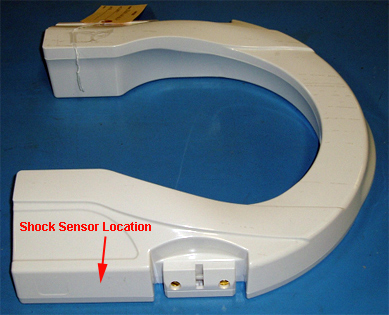
Place the sensor where indicated in the illustration below for the 1.5T and 3.0T HNU AB Bridge:
Illustration 25: 1.5T and 3.0T HNU AB Bridge - Shock Sensor Placement
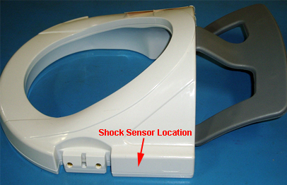
Place the sensor where indicated in the illustration below for the following coils:
1.5T GEM Flex Interface Box (16-Channel Fixed P-Connector)
1.5T GEM Flex Interface Box (8-Channel Combined 1.5T HD Connector)
GEM Flex Interface Box (16-Channel Fixed 3.0T P-Connector)
GEM Flex Interface Box (8-Channel Combined 3.0T HD Connector)
Illustration 26: GEM Flex Interface Box - Shock Sensor Placement
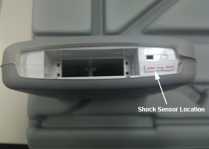